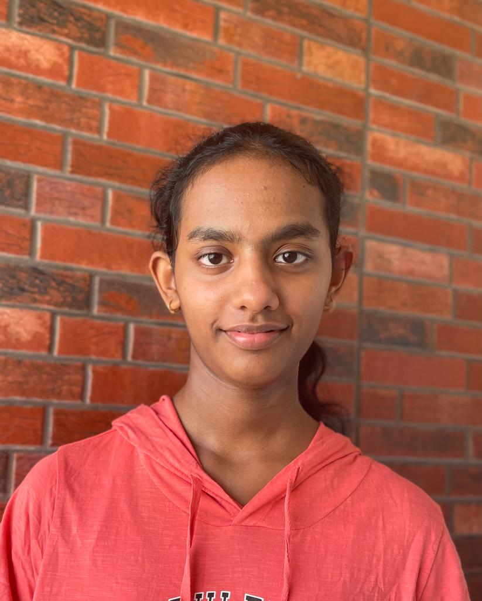

ABOUT ME:
Hi! My name is Sanjita Kumar. I am currently an undergraduate student at IIIT Hyderabad. My branch is BTech Computer Science with a MS in Computational Natural Sciences. I am passionate about problem solving and exploring new topics, areas and softwares. My current interests include learning about quantum computing, scientific-computing, and learning more mathematics. I like solving maths, physics and puzzles and am currently interested in learning how to model these problems on a computer.
I am currently in ISAQC and Chess Club. I love reading books, listening to podcasts, watching popular science and math videos including Numberphile, 3blue1brown.
Current Interests-
- Mathematics
- Podcasts
- Running and watching sports
- Chess
- Quantum Computing
- Puzzles
Skills-
- Video editing on DaVinci Resolve
- C
- C++
- Python
- Numpy, Matplotlib and Pandas
- Blender, and audio editing on Waveform and Cakewalk by Bandlab
- HTML,CSS and JS

Timeline-
-
I am from Mumbai and did my initial schooling and 11th and 12 th grade in Mumbai. I moved around a lot throughout my schooling. I got 96.6% in 10th grade and 97.4% in 12th grade.Apart from school I have explored many different activites like playing table tennis and basketball in school, participating in different contests such as GSL(Global Social Leaders) where our team had worked on a site to promote Good health and Well being and run activites in the pandemic for it. I have also participated in different school events such as MUN, hackathons, and annual days.
I was introduced to web development and python in the 7th grade.I had also participated in an enterpreneurship contest where my teams idea was a website that had games and content that promoted SDG goals. I had learned web development during the week where I had built the site on my own using tutorials, stackoverflow and blogs on the internet. I ended up being able to make a matching-cards game and a login system using pHp for the site.
During the pandemic I had also watched a lot of MIT OCW lectures and towards the end of 10th and start of 11th grade I found out about competitive programming.Due to JEE preparation and school work I was not able prepare for the olympiad but I did solve a lot of problems from websites like CSES and ZCO and ZIO previous year problems on codechef. Solving these problems felt like solving fun puzzles especially the ZIO problems which can be done using pen and paper. This also introduced me to concepts like time complexity and algorithms. I also found out about math olympiads and subjects like combinatorics which I had never explored before. I gave IOQM in 12th for the first time and got a national certificate for coming in the top 10% of participants.After the college admission process has got over I started exploring these subjects again in college. Along with school, I spent 11th and 12th grade preparing for JEE mains and advanced. I also wrote UGEE, IAT and MHTCET
-
I was very interested in editing and VFX in 8th-9th grade and have learnt Blender, Da Vinci Resolve, spent some time on GIMP and tried to make small animations, 3D art and edit videos especially for my school events and competitions. I have also spent some time on Cakewalk by Bandlab and similar softwares learning about music production, VST plugins and what goes into the process. While I am not proficient at these software I really enjoyed it as it introduced me to online communities of people trying to learn new things. It coincided with me learning programming and fuelled my interest in computers and how they can be applied to such a diverse range of interests.
-
First year of college: I have participated in a 2 hackathons Build2Break and Megathon, did an ML Workshop at IIT Bombay in the winter break, and did a course on Numpy, Matplotlib and Pandas in the winter break. I also worked on a couple of projects including a Random walk package, Unix Shell, this personal site , the chess tracker, multiplayer arena based tic tac toe game with facial recognition and a couple of other projects and courses.